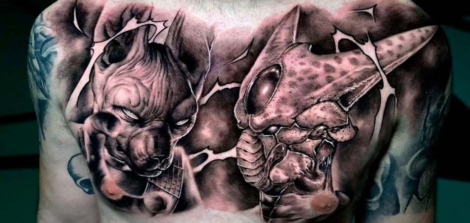

Empezó con el grafiti, continuó con la pintura y ahora se lanza al tatuaje… hasta de piezas arqueológicas. Es la historia de Samuel Martínez (Jerez, 1987), conocido artísticamente por el nombre de Pol Tattoo. Cuando era un chaval y comenzó con el bachillerato artístico pasaba más tiempo “fuera de la calle pintando grafitis que en clase”. Así dejaba por todos los rincones de Jerez la palabra “Swing”. Ahora Pol Tattoo tiene estudio propio en su ciudad natal y se anima a iniciar proyectos como el que este sábado ha tenido por primera vez en el Museo Arqueológico de Jerez.
Pol Tattoo
